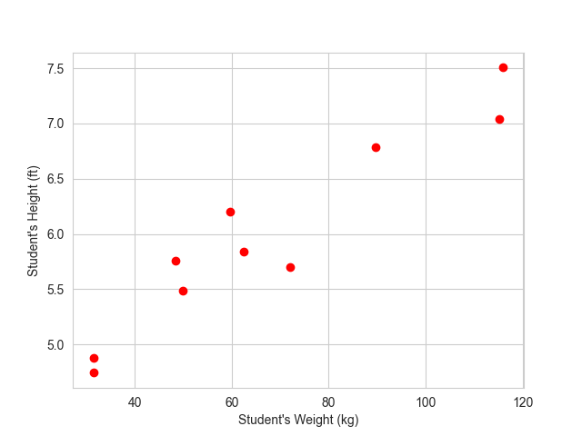

Generalized eigenvectors and eigenspaces
2 min
Monday, January 25, 2021
Linear regression is a fundamental algorithm in machine learning used for predicting a continuous dependent variable based on one or more independent variables. The objective is to find the best-fit line that minimizes the difference between the predicted and actual values.
A simple linear regression in multiple predictors/input variables/features/independent variables/ explanatory variables/regressors/ covariates (many names) often takes the form
\[y=f(\mathbf{x})+\epsilon =\mathbf{\beta}\mathbf{x}+\epsilon\]
where \(\mathbf{\beta} \in \mathbb{R}^d\) are regression parameters or constant values that we aim to estimate and \(\epsilon \sim \mathcal{N}(0,1)\) is a normally distributed error term independent of \(x\) or also called the white noise.
For simplicity let’s start with this toy example. Say, we have the data from a class of 10 students and their heights and weights are as follows:
Student Weight (kg) Height (ft)
----------------------------------------
1 89.64 6.79
2 48.37 5.76
3 115.26 7.04
4 116.02 7.51
5 49.84 5.48
6 59.57 6.20
7 31.41 4.74
8 71.95 5.70
9 31.55 4.88
10 62.50 5.84 and this data looks like this:

In this case, the model:
\[y=f(x)+\epsilon=\beta_0+\beta_1 x+\epsilon\]
Therefore, in our model we need to estimate the parameters \(\beta_0,\beta_1\). The true relationship between the explanatory variables and the dependent variable is \(y=f(x)\). But our model is \(y=f(x)+\epsilon\). Here, this \(f(x)\) is the working model with the data. In other words, \(\hat{y}=f(x)=\hat{\beta}_0+\hat{\beta}_1 x\). Therefore, there should be some error in the model prediction which we are calling \(\epsilon=\|y-\hat{y}\|\) where \(y\) is the true value and \(\hat{y}\) is the predicted value. This error term is normally distributed with mean 0 and variance 1. To get the best estimate of the parameters \(\beta_0,\beta_1\) we can minimize the error term as much as possible. So, we define the residual sum of squares (RSS) as:
\[\begin{align} RSS &=\epsilon_1^2+\epsilon_2^2+\cdots+\epsilon_{10}^2\\ &= \sum_{i=1}^{10}(y_i-\hat{\beta}_0-\hat{\beta}_1 x_i)^2\\ \hat{\mathcal{l}}(\bar{\beta})&=\sum_{i=1}^{10}(y_i-\hat{\beta}_0-\hat{\beta}_1 x_i)^2\\ \end{align}\]
Using multivariate calculus we see
\[\begin{align} \frac{\partial l}{\partial \beta_0}&=\sum_{i=1}^{10} 2(y_i-\hat{\beta}_0-\hat{\beta}_1 x_i)(-1)\\ \frac{\partial l}{\partial \beta_1}&= \sum_{i=1}^{10} 2(y_i-\hat{\beta}_0-\hat{\beta}_1 x_i)(-x_i) \end{align}\]
Setting the partial derivatives to zero we solve for \(\hat{\beta_0},\hat{\beta_1}\) as follows
\[\begin{align*} \frac{\partial l}{\partial \beta_0}&=0\\ \implies \sum_{i=1}^{10} y_i-10 \hat{\beta_0}-\hat{\beta_1}\left(\sum_{i=1}^{10} x_i\right)&=0\\ \implies \hat{\beta_0}&=\bar{y}-\hat{\beta_1}\bar{x} \end{align*}\]
and,
\[\begin{align*} \frac{\partial l}{\partial \beta_1}&=0\\ \implies \sum_{i=1}^{10} 2(y_i-\hat{\beta}_0-\hat{\beta}_1 x_i)(-x_i)&=0\\ \implies \sum_{i=1}^{10} (y_i-\hat{\beta}_0-\hat{\beta}_1 x_i)(x_i)&=0\\ \implies \sum_{i=1}^{10} x_iy_i-\hat{\beta_0}\left(\sum_{i=1}^{10} x_i\right)-\hat{\beta_1}\left(\sum_{i=1}^{10} x_i^2\right)&=0\\ \implies \sum_{i=1}^{10} x_iy_i-\left(\bar{y}-\hat{\beta_1}\bar{x}\right)\left(\sum_{i=1}^{10} x_i\right)-\hat{\beta_1}\left(\sum_{i=1}^{10} x_i^2\right)&=0\\ \implies \sum_{i=1}^{10} x_iy_i-\bar{y}\left(\sum_{i=1}^{10} x_i\right)+\hat{\beta_1}\bar{x}\left(\sum_{i=1}^{10} x_i\right)-\hat{\beta_1}\left(\sum_{i=1}^{10} x_i^2\right)&=0\\ \implies \sum_{i=1}^{10} x_iy_i-\bar{y}\left(\sum_{i=1}^{10} x_i\right) -\hat{\beta_1}\left(\sum_{i=1}^{10}x_i^2-\bar{x}\sum_{i=1}^{10}x_i\right)&=0\\ \implies \sum_{i=1}^{10} x_iy_i-\bar{y}\left(\sum_{i=1}^{10} x_i\right) -\hat{\beta_1}\left(\sum_{i=1}^{10}x_i^2-10\bar{x}^2\right)&=0\\ \implies \sum_{i=1}^{10} x_iy_i-\bar{y}\left(\sum_{i=1}^{10} x_i\right) -\hat{\beta_1}\left(\sum_{i=1}^{10}x_i^2-2\times 10\times \bar{x}^2+10\bar{x}^2\right)&=0\\ \implies \hat{\beta_1}&=\frac{\sum_{i=1}^{10} x_iy_i-10\bar{x}\bar{y}}{\sum_{i=1}^{10}x_i^2-2\times 10\times \bar{x}^2+10\bar{x}^2}\\ \implies \hat{\beta_1}&=\frac{\sum_{i=1}^{10} x_iy_i -10\bar{x}\bar{y}-10\bar{x}\bar{y}+10\bar{x}\bar{y}}{\sum_{i=1}^{10}x_i^2-2\bar{x}\times 10\times\frac{1}{10}\sum_{i=1}^{10}x_i +10\bar{x}^2}\\ \implies \hat{\beta_1}&=\frac{\sum_{i=1}^{10} x_iy_i-\bar{y}\left(\sum_{i=1}^{10} x_i\right)-\bar{x}\left(\sum_{i=1}^{10} y_i\right)+10\bar{x}\bar{y}}{\sum_{i=1}^{10}(x_i-\bar{x})^2}\\ \implies \hat{\beta_1}&=\frac{\sum_{i=1}^{10}\left(x_iy_i-x_i\bar{y}-\bar{x}y_i+\bar{x}\bar{y}\right)}{\sum_{i=1}^{10}(x_i-\bar{x})^2}\\ \implies \hat{\beta_1}&=\frac{\sum_{i=1}^{10}(x_i-\bar{x})(y_i-\bar{y})}{\sum_{i=1}^{10}(x_i-\bar{x})^2}\\ \end{align*}\]
Therefore, we have the following
\[\begin{align*} \hat{\beta_0}&=\bar{y}-\hat{\beta_1}\bar{x}\\ \hat{\beta_1}&=\frac{\sum_{i=1}^{10}(x_i-\bar{x})(y_i-\bar{y})}{\sum_{i=1}^{10}(x_i-\bar{x})^2} \end{align*}\]
To be continued in the next post…
Share on
You may also like
@online{islam2024,
author = {Islam, Rafiq},
title = {Understanding {Stochastic} {Gradient} {Descent} {Using}
{Simple} {Linear} {Regression}},
date = {2024-05-25},
url = {https://mrislambd.github.io/posts/sgd-linreg/},
langid = {en}
}